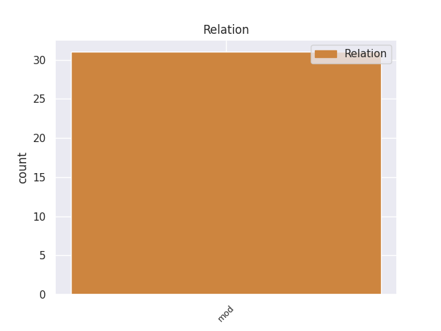
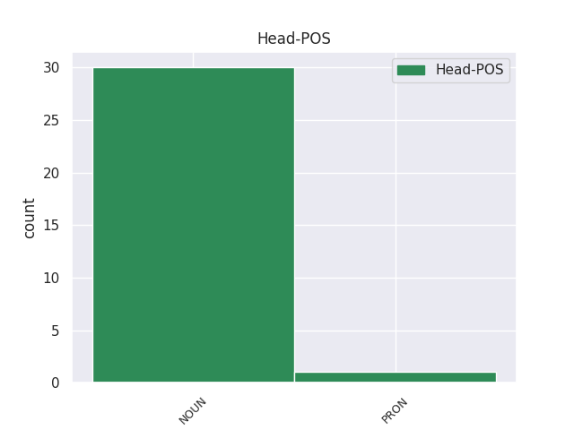
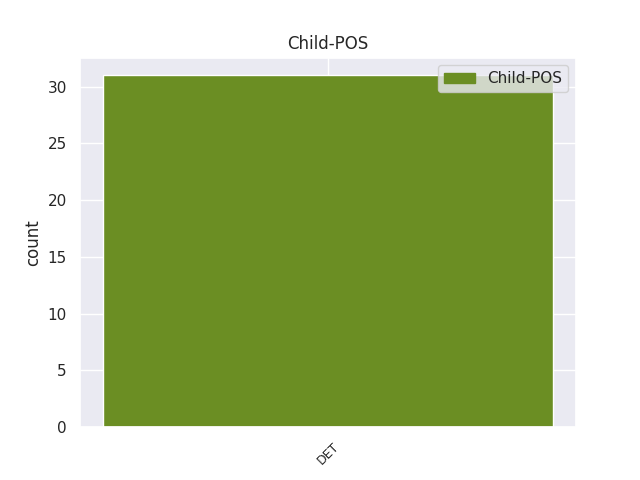

Distribution of features within this leaf



Agreement Rules sorted by frequency.
- When the dependent token is the modifer(mod) of the head token, and the head token is NOUN and the dependent token is DET.
1 Smulkiojo _ _ _ _ 0 _ _ _
2 ir _ _ _ _ 0 _ _ _
3 vidutinio _ _ _ _ 0 _ _ _
4 verslo _ _ _ _ 0 _ _ _
5 subjektams _ _ _ _ 0 _ _ _
6 gali _ _ _ _ 0 _ _ _
7 būti _ _ _ _ 0 _ _ _
8 taikomos _ _ _ _ 0 _ _ _
9 šios _ _ _ _ 0 _ _ _
10 valstybės _ _ _ _ 0 _ _ _
11 paramos _ _ _ _ 0 _ _ _
12 formos _ _ _ _ 0 _ _ _
13 : _ _ _ _ 0 _ _ _
14 1 _ _ _ _ 0 _ _ _
15 ) _ _ _ _ 0 _ _ _
16 mokesčių _ _ _ _ 0 _ _ _
17 lengvatos _ _ _ _ 0 _ _ _
18 ( _ _ _ _ 0 _ _ _
19 jei _ _ _ _ 0 _ _ _
20 jos _ _ _ _ 0 _ _ _
21 nustatytos _ _ _ _ 0 _ _ _
22 įstatymų _ _ _ _ 0 _ _ _
23 ) _ _ _ _ 0 _ _ _
24 , _ _ _ _ 0 _ _ _
25 rinkliavų _ _ _ _ 0 _ _ _
26 lengvatos _ _ _ _ 0 _ _ _
27 ; _ _ _ _ 0 _ _ _
28 2 _ _ _ _ 0 _ _ _
29 ) _ _ _ _ 0 _ _ _
30 teisės _ _ _ _ 0 _ _ _
31 aktų _ _ _ _ 0 _ _ _
32 nustatyta _ _ _ _ 0 _ _ _
33 tvarka _ _ _ _ 0 _ _ _
34 finansinė _ _ _ _ 0 _ _ _
35 parama _ _ _ _ 0 _ _ _
36 : _ _ _ _ 0 _ _ _
37 lengvatinių _ _ _ _ 0 _ _ _
38 paskolų _ _ _ _ 0 _ _ _
39 teikimas _ _ _ _ 0 _ _ _
40 , _ _ _ _ 0 _ _ _
41 labai _ _ _ _ 0 _ _ _
42 mažų _ _ _ _ 0 _ _ _
43 paskolų _ _ _ _ 0 _ _ _
44 teikimas _ _ _ _ 0 _ _ _
45 , _ _ _ _ 0 _ _ _
46 dalinis _ _ _ _ 0 _ _ _
47 ar _ _ _ _ 0 _ _ _
48 visiškas _ _ _ _ 0 _ _ _
49 palūkanų _ _ _ _ 0 _ _ _
50 dengimas _ _ _ _ 0 _ _ _
51 , _ _ _ _ 0 _ _ _
52 garantijų _ _ _ _ 0 _ _ _
53 teikimas _ _ _ _ 0 _ _ _
54 , _ _ _ _ 0 _ _ _
55 kreditų _ _ _ _ 0 _ _ _
56 draudimas _ _ _ _ 0 _ _ _
57 , _ _ _ _ 0 _ _ _
58 rizikos _ _ _ _ 0 _ _ _
59 kapitalo _ _ _ _ 0 _ _ _
60 investavimas _ _ _ _ 0 _ _ _
61 , _ _ _ _ 0 _ _ _
62 tam _ _ _ _ 0 _ _ _
63 tikrų _ _ _ _ 0 _ _ _
64 išlaidų _ _ _ _ 0 _ _ _
65 ( _ _ _ _ 0 _ _ _
66 steigimo _ _ _ _ 0 _ _ _
67 , _ _ _ _ 0 _ _ _
68 tyrimų _ _ _ _ 0 _ _ _
69 , _ _ _ _ 0 _ _ _
70 garantijų _ _ _ _ 0 _ _ _
71 mokesčių _ _ _ _ 0 _ _ _
72 , _ _ _ _ 0 _ _ _
73 kreditų _ _ _ _ 0 _ _ _
74 draudimo _ _ _ _ 0 _ _ _
75 įmokų _ _ _ _ 0 _ _ _
76 , _ _ _ _ 0 _ _ _
77 sertifikavimo _ _ _ _ 0 _ _ _
78 ( _ _ _ _ 0 _ _ _
79 registravimo _ _ _ _ 0 _ _ _
80 ) _ _ _ _ 0 _ _ _
81 , _ _ _ _ 0 _ _ _
82 atitikties _ _ _ _ 0 _ _ _
83 įvertinimo _ _ _ _ 0 _ _ _
84 ir _ _ _ _ 0 _ _ _
85 kitų _ _ _ _ 0 _ _ _
86 ) _ _ _ _ 0 _ _ _
87 kompensavimas _ _ _ _ 0 _ _ _
88 , _ _ _ _ 0 _ _ _
89 subsidijos _ _ _ _ 0 _ _ _
90 darbo _ _ _ _ 0 _ _ _
91 vietoms _ _ _ _ 0 _ _ _
92 kurti _ _ _ _ 0 _ _ _
93 ; _ _ _ _ 0 _ _ _
94 3 _ _ _ _ 0 _ _ _
95 ) _ _ _ _ 0 _ _ _
96 viešųjų _ _ _ _ 0 _ _ _
97 paslaugų _ _ _ _ 0 _ _ _
98 verslui _ _ _ _ 0 _ _ _
99 teikimas _ _ _ _ 0 _ _ _
100 verslo _ _ _ _ 0 _ _ _
101 inkubatoriuose _ _ _ _ 0 _ _ _
102 , _ _ _ _ 0 _ _ _
103 verslo _ _ _ _ 0 _ _ _
104 informacijos _ _ _ _ 0 _ _ _
105 centruose _ _ _ _ 0 _ _ _
106 , _ _ _ _ 0 _ _ _
107 mokslo _ _ _ _ 0 _ _ _
108 ir _ _ _ _ 0 _ _ _
109 technologijų _ _ _ _ 0 _ _ _
110 parkuose _ _ _ _ 0 _ _ _
111 ir _ _ _ _ 0 _ _ _
112 kituose _ _ _ _ 0 _ _ _
113 juridiniuose _ _ _ _ 0 _ _ _
114 asmenyse _ _ _ _ 0 _ _ _
115 , _ _ _ _ 0 _ _ _
116 kurių _ _ _ _ 0 _ _ _
117 steigimo _ _ _ _ 0 _ _ _
118 dokumentuose _ _ _ _ 0 _ _ _
119 nustatytas _ _ _ _ 0 _ _ _
120 šių _ _ _ _ 0 _ _ _
121 paslaugų _ _ _ _ 0 _ _ _
122 teikimas _ _ _ _ 0 _ _ _
123 ; _ _ _ _ 0 _ _ _
124 3 _ _ _ _ 0 _ _ _
125 punkto _ _ _ _ 0 _ _ _
126 redakcija _ _ _ _ 0 _ _ _
127 nuo _ _ _ _ 0 _ _ _
128 2011 _ _ _ _ 0 _ _ _
129 m _ _ _ _ 0 _ _ _
130 . _ _ _ _ 0 _ _ _
131 sausio _ _ _ _ 0 _ _ _
132 1 _ _ _ _ 0 _ _ _
133 d _ _ _ _ 0 _ _ _
134 . _ _ _ _ 0 _ _ _
135 : _ _ _ _ 0 _ _ _
136 3 _ _ _ _ 0 _ _ _
137 ) _ _ _ _ 0 _ _ _
138 viešųjų _ _ _ _ 0 _ _ _
139 paslaugų _ _ _ _ 0 _ _ _
140 verslui _ _ _ _ 0 _ _ _
141 teikimas _ _ _ _ 0 _ _ _
142 viešojoje _ _ _ _ 0 _ _ _
143 įstaigoje _ _ _ _ 0 _ _ _
144 „ _ _ _ _ 0 _ _ _
145 Eksportuojančioji _ _ _ _ 0 _ _ _
146 Lietuva _ _ _ _ 0 _ _ _
147 “ _ _ _ _ 0 _ _ _
148 , _ _ _ _ 0 _ _ _
149 verslo _ _ _ _ 0 _ _ _
150 inkubatoriuose _ _ _ _ 0 _ _ _
151 , _ _ _ _ 0 _ _ _
152 verslo _ _ _ _ 0 _ _ _
153 informacijos _ _ _ _ 0 _ _ _
154 centruose _ _ _ _ 0 _ _ _
155 , _ _ _ _ 0 _ _ _
156 mokslo _ _ _ _ 0 _ _ _
157 ir _ _ _ _ 0 _ _ _
158 technologijų _ _ _ _ 0 _ _ _
159 parkuose _ _ _ _ 0 _ _ _
160 ir _ _ _ _ 0 _ _ _
161 kituose _ _ _ _ 0 _ _ _
162 juridiniuose _ _ _ _ 0 _ _ _
163 asmenyse _ _ _ _ 0 _ _ _
164 , _ _ _ _ 0 _ _ _
165 kurių kuris DET įv.vyr.dgs.K. Case=Gen|Definite=Ind|Gender=Masc|Number=Plur|PronType=Int 166 mod _ _
166 steigimo steigimas NOUN dkt.vyr.vns.K. Case=Gen|Gender=Masc|Number=Sing 0 _ _ _
167 dokumentuose _ _ _ _ 0 _ _ _
168 nustatytas _ _ _ _ 0 _ _ _
169 šių _ _ _ _ 0 _ _ _
170 paslaugų _ _ _ _ 0 _ _ _
171 teikimas _ _ _ _ 0 _ _ _
172 ; _ _ _ _ 0 _ _ _
173 4 _ _ _ _ 0 _ _ _
174 ) _ _ _ _ 0 _ _ _
175 Vyriausybės _ _ _ _ 0 _ _ _
176 ar _ _ _ _ 0 _ _ _
177 savivaldybių _ _ _ _ 0 _ _ _
178 nustatytos _ _ _ _ 0 _ _ _
179 kitos _ _ _ _ 0 _ _ _
180 paramos _ _ _ _ 0 _ _ _
181 formos _ _ _ _ 0 _ _ _
182 . _ _ _ _ 0 _ _ _
Disagree Examples:
1 Kitas _ _ _ _ 0 _ _ _
2 dalykas _ _ _ _ 0 _ _ _
3 - _ _ _ _ 0 _ _ _
4 visų visas DET įv.vyr.dgs.K. Case=Gen|Definite=Ind|Gender=Masc|Number=Plur|PronType=Tot 5 mod _ _
5 pagrindai pagrindas NOUN dkt.vyr.dgs.V. Case=Nom|Gender=Masc|Number=Plur 0 _ _ _
6 yra _ _ _ _ 0 _ _ _
7 nustatyti _ _ _ _ 0 _ _ _
8 vienodi _ _ _ _ 0 _ _ _
9 , _ _ _ _ 0 _ _ _
10 o _ _ _ _ 0 _ _ _
11 universitetai _ _ _ _ 0 _ _ _
12 , _ _ _ _ 0 _ _ _
13 mokslo _ _ _ _ 0 _ _ _
14 įstaigos _ _ _ _ 0 _ _ _
15 ar _ _ _ _ 0 _ _ _
16 mokslo _ _ _ _ 0 _ _ _
17 institucijos _ _ _ _ 0 _ _ _
18 yra _ _ _ _ 0 _ _ _
19 labai _ _ _ _ 0 _ _ _
20 skirtingos _ _ _ _ 0 _ _ _
21 . _ _ _ _ 0 _ _ _
1 Poleminis _ _ _ _ 0 _ _ _
2 publicistinis _ _ _ _ 0 _ _ _
3 stilius _ _ _ _ 0 _ _ _
4 suteiks _ _ _ _ 0 _ _ _
5 gerą _ _ _ _ 0 _ _ _
6 progą _ _ _ _ 0 _ _ _
7 visiems _ _ _ _ 0 _ _ _
8 , _ _ _ _ 0 _ _ _
9 kurių kuris DET įv.vyr.dgs.K. Case=Gen|Definite=Ind|Gender=Masc|Number=Plur|PronType=Int 10 mod _ _
10 nuomonė nuomonė NOUN dkt.mot.vns.V. Case=Nom|Gender=Fem|Number=Sing 0 _ _ _
11 nesutaps _ _ _ _ 0 _ _ _
12 su _ _ _ _ 0 _ _ _
13 istorijos _ _ _ _ 0 _ _ _
14 autorių _ _ _ _ 0 _ _ _
15 nuomone _ _ _ _ 0 _ _ _
16 , _ _ _ _ 0 _ _ _
17 kritikuoti _ _ _ _ 0 _ _ _
18 ir _ _ _ _ 0 _ _ _
19 juos _ _ _ _ 0 _ _ _
20 pačius _ _ _ _ 0 _ _ _
21 , _ _ _ _ 0 _ _ _
22 ir _ _ _ _ 0 _ _ _
23 12-ąjį _ _ _ _ 0 _ _ _
24 Lietuvos _ _ _ _ 0 _ _ _
25 istorijos _ _ _ _ 0 _ _ _
26 tomą _ _ _ _ 0 _ _ _
27 . _ _ _ _ 0 _ _ _
1 Jeigu _ _ _ _ 0 _ _ _
2 Vyriausybė _ _ _ _ 0 _ _ _
3 žino _ _ _ _ 0 _ _ _
4 , _ _ _ _ 0 _ _ _
5 kad _ _ _ _ 0 _ _ _
6 birželį _ _ _ _ 0 _ _ _
7 vėl _ _ _ _ 0 _ _ _
8 reikės _ _ _ _ 0 _ _ _
9 teikti _ _ _ _ 0 _ _ _
10 naują _ _ _ _ 0 _ _ _
11 projektą _ _ _ _ 0 _ _ _
12 , _ _ _ _ 0 _ _ _
13 o _ _ _ _ 0 _ _ _
14 šio šis DET įv.vyr.vns.K. Case=Gen|Definite=Ind|Gender=Masc|Number=Sing|PronType=Dem 15 mod _ _
15 svarstymas svarstymas NOUN dkt.vyr.vns.V. Case=Nom|Gender=Masc|Number=Sing 0 _ _ _
16 nusitęs _ _ _ _ 0 _ _ _
17 iki _ _ _ _ 0 _ _ _
18 gegužės _ _ _ _ 0 _ _ _
19 , _ _ _ _ 0 _ _ _
20 tai _ _ _ _ 0 _ _ _
21 kam _ _ _ _ 0 _ _ _
22 reikia _ _ _ _ 0 _ _ _
23 taip _ _ _ _ 0 _ _ _
24 žaisti _ _ _ _ 0 _ _ _
25 ? _ _ _ _ 0 _ _ _
1 Nors _ _ _ _ 0 _ _ _
2 toks toks DET įv.vyr.vns.V. Case=Nom|Definite=Ind|Gender=Masc|Number=Sing|PronType=Dem 3 mod _ _
3 motyvacijos motyvacija NOUN dkt.mot.vns.K. Case=Gen|Gender=Fem|Number=Sing 0 _ _ _
4 suskirstymas _ _ _ _ 0 _ _ _
5 gali _ _ _ _ 0 _ _ _
6 būti _ _ _ _ 0 _ _ _
7 ginčijamas _ _ _ _ 0 _ _ _
8 , _ _ _ _ 0 _ _ _
9 nes _ _ _ _ 0 _ _ _
10 , _ _ _ _ 0 _ _ _
11 pavyzdžiui _ _ _ _ 0 _ _ _
12 , _ _ _ _ 0 _ _ _
13 „ _ _ _ _ 0 _ _ _
14 namų _ _ _ _ 0 _ _ _
15 ilgesys _ _ _ _ 0 _ _ _
16 “ _ _ _ _ 0 _ _ _
17 ( _ _ _ _ 0 _ _ _
18 knygoje _ _ _ _ 0 _ _ _
19 aiškiai _ _ _ _ 0 _ _ _
20 įrodytas _ _ _ _ 0 _ _ _
21 kaip _ _ _ _ 0 _ _ _
22 svarbiausias _ _ _ _ 0 _ _ _
23 motyvas _ _ _ _ 0 _ _ _
24 ) _ _ _ _ 0 _ _ _
25 gali _ _ _ _ 0 _ _ _
26 būti _ _ _ _ 0 _ _ _
27 laikomas _ _ _ _ 0 _ _ _
28 pagrindine _ _ _ _ 0 _ _ _
29 traukos _ _ _ _ 0 _ _ _
30 faktoriaus _ _ _ _ 0 _ _ _
31 dalimi _ _ _ _ 0 _ _ _
32 . _ _ _ _ 0 _ _ _
1 Taikant _ _ _ _ 0 _ _ _
2 genų _ _ _ _ 0 _ _ _
3 inžineriją _ _ _ _ 0 _ _ _
4 , _ _ _ _ 0 _ _ _
5 kai _ _ _ _ 0 _ _ _
6 vieno _ _ _ _ 0 _ _ _
7 augalo _ _ _ _ 0 _ _ _
8 ( _ _ _ _ 0 _ _ _
9 organizmo _ _ _ _ 0 _ _ _
10 ) _ _ _ _ 0 _ _ _
11 genas _ _ _ _ 0 _ _ _
12 perkeliamas _ _ _ _ 0 _ _ _
13 į _ _ _ _ 0 _ _ _
14 kito _ _ _ _ 0 _ _ _
15 augalo _ _ _ _ 0 _ _ _
16 geną _ _ _ _ 0 _ _ _
17 , _ _ _ _ 0 _ _ _
18 sukuriamas _ _ _ _ 0 _ _ _
19 naujas _ _ _ _ 0 _ _ _
20 augalas _ _ _ _ 0 _ _ _
21 , _ _ _ _ 0 _ _ _
22 kurio kuris DET įv.vyr.vns.K. Case=Gen|Definite=Ind|Gender=Masc|Number=Sing|PronType=Int 24 mod _ _
23 genetinė _ _ _ _ 0 _ _ _
24 medžiaga medžiaga NOUN dkt.mot.vns.V. Case=Nom|Gender=Fem|Number=Sing 0 _ _ _
25 yra _ _ _ _ 0 _ _ _
26 taip _ _ _ _ 0 _ _ _
27 pakeista _ _ _ _ 0 _ _ _
28 ir _ _ _ _ 0 _ _ _
29 įgyja _ _ _ _ 0 _ _ _
30 tokių _ _ _ _ 0 _ _ _
31 savybių _ _ _ _ 0 _ _ _
32 , _ _ _ _ 0 _ _ _
33 kurių _ _ _ _ 0 _ _ _
34 negalėtų _ _ _ _ 0 _ _ _
35 atsirasti _ _ _ _ 0 _ _ _
36 natūraliu _ _ _ _ 0 _ _ _
37 būdu _ _ _ _ 0 _ _ _
38 . _ _ _ _ 0 _ _ _